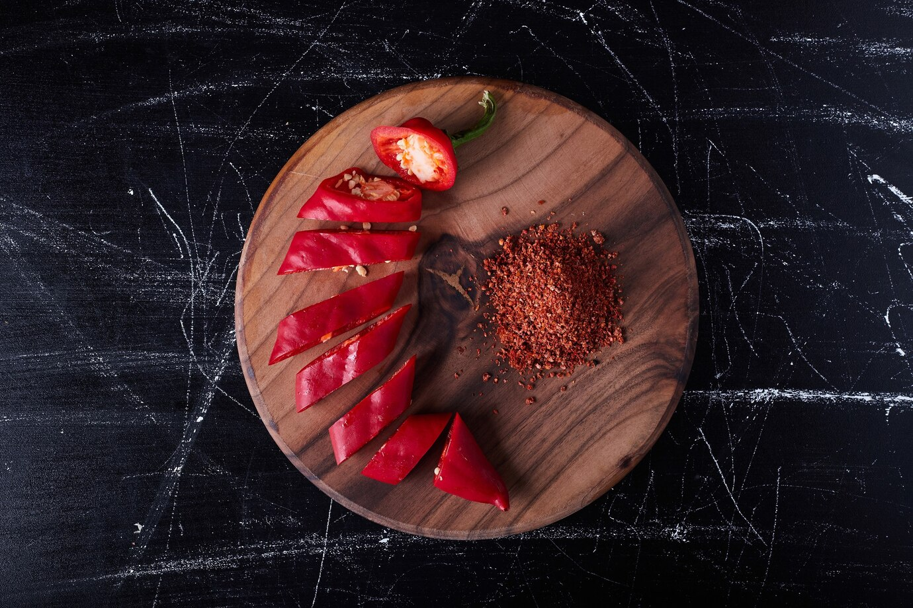

La passionnante histoire du Mexique
L’Histoire du Mexique, particulièrement riche, peut être divisée en trois périodes majeures. Différents peuples aux cultures diverses se sont succédés jusqu’en 1521, lors de la reddition du dernier empereur aztèque aux Espagnols. Le troisième volet débute à l’indépendance du Mexique en 1821 et dure jusqu’à nos jours
La période précolombienne
Les Olmèques, les premiers peuples du Mexique
Vers l’an –1500, cette civilisation fut la première à occuper le territoire mexicain. Installés sur les actuels États de Puebla et de Veracruz, les Olmèques possédaient déjà des rites et des techniques de constructions bien établies.
Les Mayas, la plus grande civilisation précolombienne
L’origine des Mayas, datée à priori au IVe siècle, reste encore inconnue. À son apogée (entre 600 et 900 après J.-C.), cette brillante civilisation s’étendait principalement sur la péninsule du Yucatán et sur la quasi-totalité du territoire actuel du Guatemala.
L’histoire chronologique de l’ancien empire Maya a pu être établie grâce à des stèles datées par un calendrier extrêmement complexe. Cet outil témoigne des connaissances mathématiques et astronomiques d’un peuple qui avait la « hantise du temps ».
Les Mayas formaient une civilisation très hiérarchisée en « États-nations » à tel point que chaque État disposait de sa propre armée. Ils eurent pour Dieu Créateur, « Kukulcan », le « serpent à plumes » mais également Itzamma (le Dieu Ciel) équivalent de Zeus chez les Grecs. Le dieu Maya le plus populaire fut certainement Chac, le dieu de la Pluie. On peut dire que, d’une manière générale, la religion Maya vénérait la nature.
L’arrivée des Toltèques
Vers le Xe siècle, les Toltèques, un peuple venu du nord, envahissent le Yucatán au moment où la civilisation Maya décline. Les Mayas, une population agricole, se remettent difficilement de périodes de sécheresse et de l’appauvrissement de sols épuisés par la culture du maïs sur brûlis. L’arrivée des Toltèques et l’établissement du nouvel empire à Chichen Itza introduisent l’art de l’orfèvrerie et de la ferronnerie. Une nouvelle culture toltèque-maya s’établit en même temps que la pratique courante des sacrifices humains. La révolte des Mayas et la chute de Chichen Itza signent la fin de la suprématie des Toltèques.
Les Aztèques, le dernier peuple précolombien de l’Histoire du Mexique
Les Aztèques, probables descendants des Toltèques, furent le dernier peuple précolombien du Mexique à connaître une période dorée. Ce peuple de nomades avait pour mission, selon la prophétie de leur dieu Huitzilopochtli, de construire une cité à l’endroit où leur apparaîtrait un aigle dévorant un serpent au-dessus d’un cactus (un symbole que l’on retrouve aujourd’hui sur le drapeau mexicain). L’oracle se réalise en 1325 sur une île du lac Texoco. Les Aztèques y bâtissent alors Tenochtitlan, une cité qui allait devenir la capitale du futur Empire aztèque.
La colonisation
Entre 1517 et 1518, les Espagnols découvrent et explorent la côte est du Mexique. Lorsque débarquent les conquistadors en 1519, les Aztèques règnent en maîtres sur la région, soumettant les populations à l’impôt et enrôlant les hommes dans leurs armées. Impopulaires auprès des indigènes, les Aztèques ont facilité la colonisation espagnole. Le premier à débarquer, le 19 février 1519, fut Hernan Cortès, célèbre conquistador qui fonde la ville de Veracruz. L’Empire aztèque prend fin le 13 août 1521 avec le siège de Tenochtitlan. La ville fut rasée par les Espagnols qui édifièrent à la place la ville de Mexico. Les Espagnols étendent dès lors leur territoire baptisé « Nouvelle-Espagne » qui vient enrichir pour de longues années le royaume d’Espagne.

Le Mexique indépendant
Après une guerre qui débute en 1810, les Espagnols perdent définitivement le Mexique en 1821. L’insurrection mexicaine commencée à Valladolid gagne peu à peu les principales villes du pays. Après plus de dix années de lutte qui coûtèrent de nombreuses vies, le Mexique acquiert son indépendance. Le 18 mai 1822, Augustin de Iturbide devient le premier empereur du Mexique indépendant.

Les endroits à voir
La péninsule du Yucatán
Grande incontournable du Mexique, la péninsule du Yucatán regroupe 3 États : Yucatán, Quintana Roo et Campeche. C’est la destination d’excellence du pays grâce à sa diversité. À ce titre, elle conviendra à la majorité des voyageurs, des plus aventuriers et intenses, à ceux recherchant plus de calme et de repos. S’il s’agit d’un premier voyage au Mexique, c’est la région que l’on vous recommanderait.
Les incontournables de la péninsule du Yucatán
Dans la mesure du possible, comptez environ 15 jours pour pouvoir faire la boucle complète des 3 États, profiter de chaque étape et explorer les incontournables que sont la biosphère de Sian Ka’an, les ruines de Tulum, la lagune aux 7 bleus de Bacalar, la biosphère de Calakmul, le site de Chichén Itzá, la réserve de Río Lagartos et Las Coloradas, et l’île d’Holbox. Chacune de ces étapes regorge d’autres activités comme la visite de cénotes ou de communautés mayas locales.
Le Chiapas
Le Chiapas est un État voisin de Campeche partageant une frontière avec le Guatemala. Il reste une région assez peu connue et peu visitée des touristes malgré ses nombreuses richesses naturelles et culturelles. Le Chiapas conviendra mieux aux personnes plus aventurières recherchant un voyage au plus proche des populations locales, en immersion dans la nature et loin du tourisme de masse.
Les incontournables du Chiapas
Niveau nature, le canyon du Sumidero (haut d’un kilomètre par endroits !), les cascades de Roberto Barrios (plutôt que celles d’Aguas Azul, bien plus touristiques), les lacs de montagne de Montebello, le gouffre de la Sima de las Cotorras, et la jungle lacandone sont nos coups de coeur. Pour les sites archéologiques, celui de Palenque est incontournable, mais on adore aussi Tonina qui a été un rival important de Palenque, Bonampak pour ses peintures murales incroyablement bien conservées, ou encore Yaxchilán pour sa proximité avec la nature. Pour terminer, la rencontre avec les communautés locales autour de la ville de San Cristóbal de las Casas est une expérience à ne pas manquer tant les traditions et le mode de vie sont atypiques et fascinants. On vous recommandera Zinacantan et Amatenango pour leur artisanat local et San Juan Chamula pour son “catholicisme indigène”.
La Basse Californie
La Basse Californie est une région plus connue des Américains que des Européens… Et à tort, car elle est parfaite pour les amoureux de la nature et de la faune marine. Cette région est plus difficile à promouvoir pour un premier voyage au Mexique car elle n’inclut pas de site archéologique maya. Ce n’est pas pour autant qu’elle ne possède pas d’histoire !
Les incontournables de la Basse Californie
Cette région ravira tout particulièrement les amateurs de plongée et autres activités aquatiques. A ne pas manquer : plongée (bouteille ou snorkeling) dans l’incroyable réserve marine de Cabo Pulmo, observation des 3 espèces de baleines en migration de décembre à mars, snorkeling avec les requins-baleines et les lions de mer, et visite de La Paz. Pour les sportifs, on aura également du kayak et du sandboarding sur les dunes de Mongote, près de La Paz.
Oaxaca
L’État de Oaxaca se situe au sud du pays, sur la côte pacifique. C’est un voisin du Chiapas et une région avec une grande diversité d’activités, mais moins développée que la péninsule du Yucatán. La ville de Oaxaca vous offrira culture et gastronomie, avec plusieurs points d’intérêts également aux alentours, alors que les plages de la côte vous permettront de vous relaxer.
Les incontournables de Oaxaca
Assurez-vous d’arpenter les rues de la ville coloniale de Oaxaca, admirez ses édifices, apprenez son histoire, et laissez-vous tenter par la fameuse “street-food” qu’elle offre. De nombreuses spécialités sont très typiques, délicieuses et méconnues des palais européens : les 7 moles, les tlayudas ou encore les chapulines raviront vos papilles ! La région est aussi connue pour sa production de cacao et de mezcal dont vous pourrez visiter les fabriques.
Egalement à voir, le site archéologique de Monte Alban, les cascades pétrifiées et sources thermales de Hierve el Agua, et les villages mayas à l’artisanat très riche (Mitla, Teotitlan, Tule). Pour les plages, vous aurez principalement le choix entre Puerto Escondido avec un air “surf”, jeune et festif, ou Huatulco, plus calme et mature avec ses petites baies sauvages. On peut aussi trouver des parcs nationaux près de ces plages.
Ville de México et ses alentours
La capitale de México est une mégalopole extrêmement riche en histoire et en culture. A la croisée entre le pré-hispanisme et la modernité post-colonisation, cette ville offre un patrimoine impressionnant à découvrir, en plus des nombreuses autres attractions alentours. Une destination qui plaira aux férus d’anthropologie, d’histoire et de culture.
Les incontournables de la Ville de México et ses alentours
Le centre historique, sa grand place (Zocalo), son Templo Mayor (un site archéologique découvert en 1978 en plein centre-ville) et ses nombreux musées, ainsi que les quartiers de Xochimilco et Coyoacán doivent figurer sur votre liste. On y ajoutera aussi le Palais National, le musée d’Anthropologie et le Château de Chapultepec, seul vrai château d’Amérique ! Le site archéologique de Teotihuacán est également une attraction appréciée et proche de la ville. Pour terminer, une visite guidée du marché de la Merced promet une sortie atypique aux plus curieux.
Cuisine, gastronomie et boissons Mexique
Cuisine
Les Mexicains sont des pros du petit déj (desayuno), qui est servi de 8h à 12h-13h dans la plupart des restos... en version continental (jus de fruits, café, petits pains ou toasts et marmelade), americano (même chose avec des œufs – al gusto – en plus) ou mexicano. Dans ce dernier cas, les œufs – qui sont la pièce maîtresse du petit déj – sont préparés avec de la tomate, du piment, des oignons, et toujours accompagnés des éternels frijoles (haricots rouges en purée).
On déjeune ensuite entre 14h et 16h30. Pour ceux qui se sont contentés d’un petit déjeuner léger, c’est le repas le plus important de la journée, comme en atteste la comida corrida, servie dans la plupart des restos.
Le soir, ces mêmes restos ne proposent que des plats à la carte, jusqu’à 21h-22h, plus tard dans les grandes villes ou les stations balnéaires. Mais en réalité, chez eux, les Mexicains ne mangent guère au dîner. Ils déjeunent tellement tard qu’ils se contentent généralement d’un en-cas en soirée.
Que ces horaires ne vous inquiètent pas : dans la pratique, les Mexicains n’ont pas vraiment d’heure fixe pour manger. On grignote dès qu’on a faim, c’est-à-dire à toute heure du jour. De fait, beaucoup de restos sont ouverts en continu.
Les restaurants
On trouve au Mexique des adresses pour tous les budgets et tous les goûts. Du moins cher au plus chic :
- les puestos, petits bouis-bouis ambulants qui proposent des tacos, des quesadillas ou des tortas (sandwichs)
- dans chaque ville, il y a un mercado de la comida à l'intérieur du marché principal, concentration de petits comptoirs (les comedores) qui servent une nourriture typique et bon marché
- les fondas, petits restos traditionnels qui servent des menus complets le midi, la fameuse comida corrida : soupe, plate de résistance avec riz et frijoles (haricots rouges), dessert. C'est généralement familial, bon et pas cher
- Il y a une grande variété de restaurants : outre les restos ordinaires ou classiques, un nombre croissant d’établissements plus chics proposent une « nouvelle cuisine mexicaine » ou internationale, sans oublier les restos italiens, les pizzerias, les japonais, quelques chinois (chifas) et les inévitables fast-foods
Le piment (chile)
Vous n'y couperez pas ! C'est la substance qui confère son piquant au chile, le fameux piment mexicain. Il paraît qu'il y en a plus de 250 variétés ! Le plus « doux » est le chile Poblano, qu'on utilise farci de viande. L’un des plus forts est le chile Tabasco.
N'hésitez pas à manger épicé. Cette nourriture est parfaitement adaptée au pays : elle fait transpirer, élimine les toxines et chasse les moustiques. Et les piments désinfectent, en plus d'être une bonne source de vitamines A et C. Les Mexicains s'en servent également pour guérir la cruda (gueule de bois) !
Avertissement : les chiles les plus brûle-gorge sont souvent les plus petits.
Quelques plats courants
Certains plats parmi les plus typiques ont une origine précolombienne. Riche et variée pour les uns, un peu lourde ou trop épicée pour les autres, la cuisine mexicaine vous plaira... ou pas. Dans le centre du pays, on pourrait dire qu'il s'agit d'une cuisine de paysans pauvres, à base de farine de maïs, qui peut atteindre un certain raffinement. Au Yucatán, les saveurs deviennent plus variées. Dans le Nord, on mange de bonnes viandes bovines, et sur les côtes beaucoup de poisson et quelques fruits de mer...
- La tortilla : c'est la base de la cuisine mexicaine et elle accompagne la plupart des plats. Préparée avec des grains de maïs (ou plus rarement de blé) détrempés dans une mixture de chaux et d'eau. On lui donne la forme d'une galette.
- taco : tortilla garnie de viande de bœuf, de porc, de poulet, de foie ou de cervelle. Le sandwich mexicain, quoi !
- L’enchilada : tortilla bourrée de viande ou de poulet, avec du fromage, mijotée dans une sauce au piment, avec de la tomate et des oignons.
- La quesadilla : tortilla garnie au choix de fromage, viande, champignons, flor de calabaza (fleur de courgette), cervelle…Elle peut être frite dans l’huile ou cuite sur une plaque.
- Le chicharrón : sorte de chips géante que l’on trouve sur tous les marchés. C’est en fait de la peau de cochon séchée au soleil puis frite dans l’huile.
- Le guacamole : purée froide d'avocat écrasé, additionnée d'oignons et de coriandre fraîche, relevée d'une pointe de piment, et arrosée d'un filet de citron vert..
- Les chilaquiles : morceaux de tortilla frite avec des oignons, du fromage râpé, du chile rouge et de la crème fraîche.
- Les gorditas : « petites grosses » en bon français. Petites galettes épaisses, nature ou fourrées au fromage, à garnir de l'accompagnement de son choix.
- Les burritos : de la viande, des haricots, des oignons, des épices, du piment et des légumes enroulés dans une tortilla de farine de blé. S’il est frit, le burrito devient chimichanga.